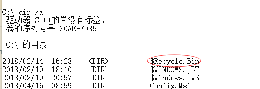
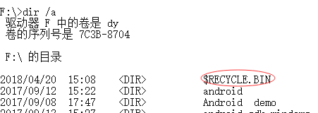
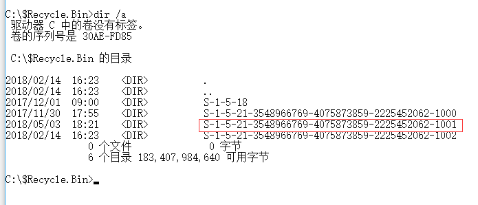
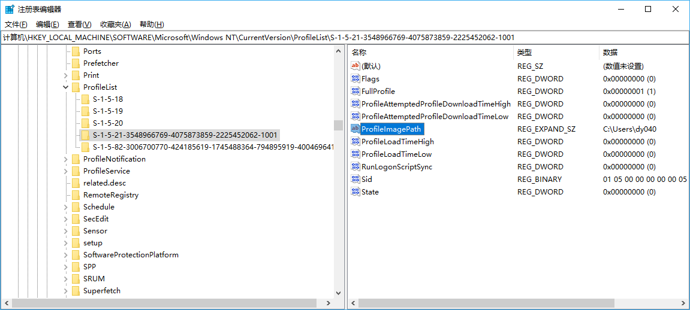
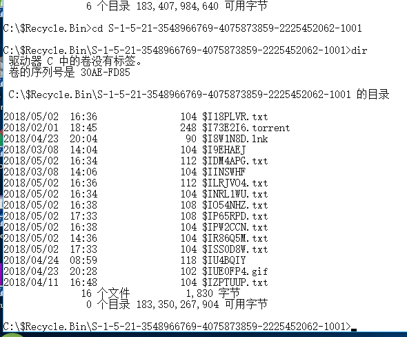
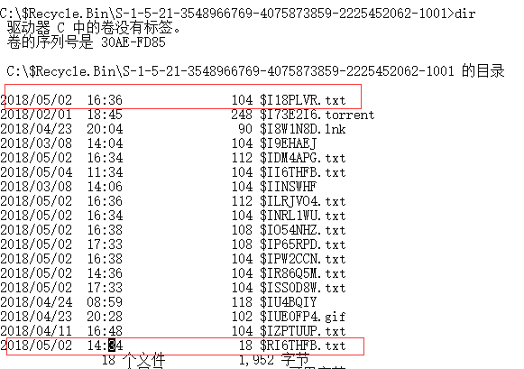
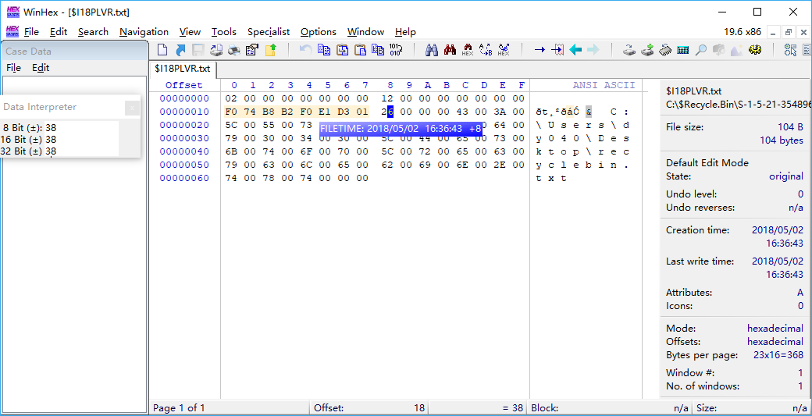

windows-回收站($Recycle.Bin)
文章目录
$Recycle.Bin文件夹
Windows在每个盘符(volume)下都有一个名为$Recycle.Bin的隐藏文件夹


$Recycle.Bin文件夹为每个用户都建立一个子文件夹( 私有的回收站 )，如下：

子文件夹名为用户的SID(WIN7 以上)
SID
SID ”S-1-5-21-3548966769-4075873859-2225452062-1001“中，“s”表示Security identifier of the user or group.”1”表示revision level,”5” 表示 authority level，”21-3…062” 表示 the domain or local computer identifier. “1001” 表示 Relative Id of User or Group.
可以在 \HKEY_LOCAL_MACHINE\SOFTWARE\Microsoft\Windows NT\CurrentVersion\ProfileList 下查看用户的 SID，如下

用户私有 bin

一般的删除两个文件，bin中会出现两个文件：$R\<FileID>.\<ext>,$I\<FileID>.\<ext>。
$R\<FileID>.\<ext> 包含了被删除文件的content，$I\<FileID>.\<ext>为被删除文件的metadata，包括删除时间、路径、大小。

$R\<FileID>.\<ext>

$I\<FileID>.\<ext>

Restoring A File
1、被删除文件的文件夹被删除
将重新建立原文件夹，若原文件夹删除后又重建，文件回复至现文件夹。
2、删除文件夹
对文件夹和文件夹里的各个文件都建立 $R\<FileID>.\<ext> 和 $I\<FileID>.\<ext> 文件。
3、重复删除同一文件
文件删除还原再删除 $R\<FileID>.\<ext> 和 $I\<FileID>.\<ext> 文件 是不同的。
参考资料
【1】https://pdfs.semanticscholar.org/db62/a02a2f90c569200bf37ead369221e04393d8.pdf